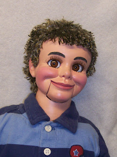

Automatic eyes
1/5/2011
Question: I must say that I was very intrigued when I read your blog a bout the automatic eyes. How would one go about making those? James
* * * * *
From Mr. D: The setup used on this figure has a pendulum weight that moves the eyes left to right as the head is turned (and tilted). I've tried several designs in the past. This one seems to work best of any I've built but I want to build a few more to refine things before I share too many details...I only used this type of eyes because the body space on this smaller figure was limited, making it tight for lever controls. I still prefer spring loaded eyes with a lever headpost control when that option is possible.
{kind=link}

* * * * *
From Mr. D: The setup used on this figure has a pendulum weight that moves the eyes left to right as the head is turned (and tilted). I've tried several designs in the past. This one seems to work best of any I've built but I want to build a few more to refine things before I share too many details...I only used this type of eyes because the body space on this smaller figure was limited, making it tight for lever controls. I still prefer spring loaded eyes with a lever headpost control when that option is possible.